首页 > 编程笔记
VS Code运行Python程序
本节介绍如何使用 VS Code（Visual Studio Code 的简称）编写并运行 Python 程序。值得一提的是，相比 PyCharm、Eclipse+PyDev，使用 VS Code 编写 Python 程序，不用创建项目，直接创建 Python 文件即可。
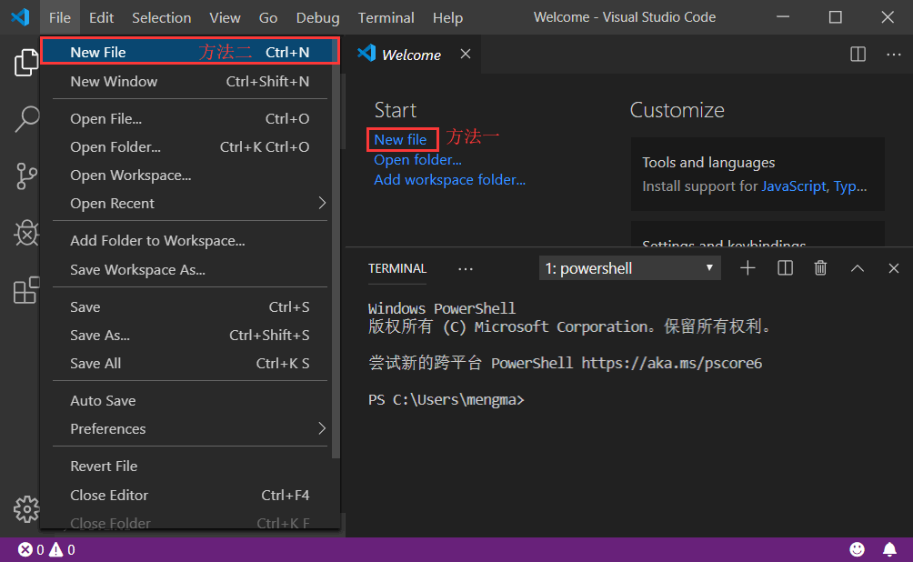
图 1 VS Code 欢迎界面
点击“New File”，或者在菜单栏中依次选择“File -> New File”，如图 2 所示。
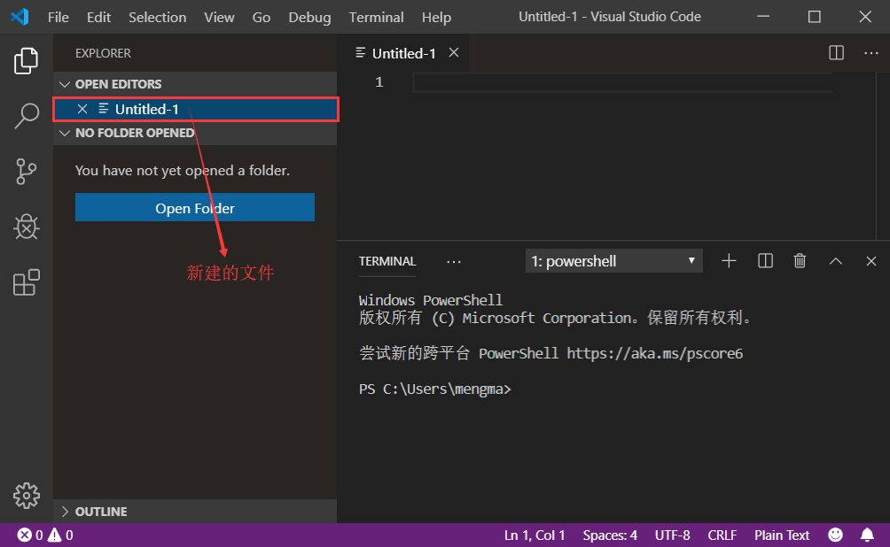
图 2 VS Code创建文件
此时可以看到，新建了一个名为“Untitled-1”的文件，此文件是 VS Code 默认创建的文件，没有文件类型，所以在编写 Python 代码前，需要手动将其另存为后缀名为 .py 的文件。
另存为的方式也很简单，使用快捷键“Ctrl+S”，或者在菜单栏中依次选择“File -> Save”，都会弹出如图 3 所示的窗口。
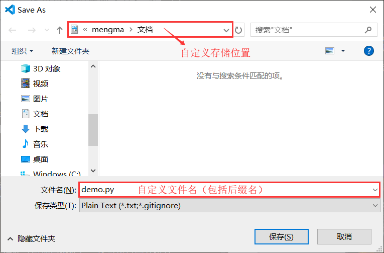
图 3 另存为 .py 文件
在此窗口中，我们可以设置该新建文件的文件名（包括后缀名），还可以自定义该文件的存储位置。
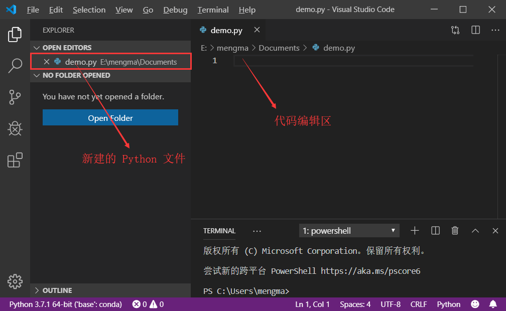
图 4 新建的 Python 文件
创建 Python 文件成功后，就可以在该文件中编写 Python 代码了，这里仍以第一个 Python 程序为例，即向“demo.py”文件中编写如下代码：
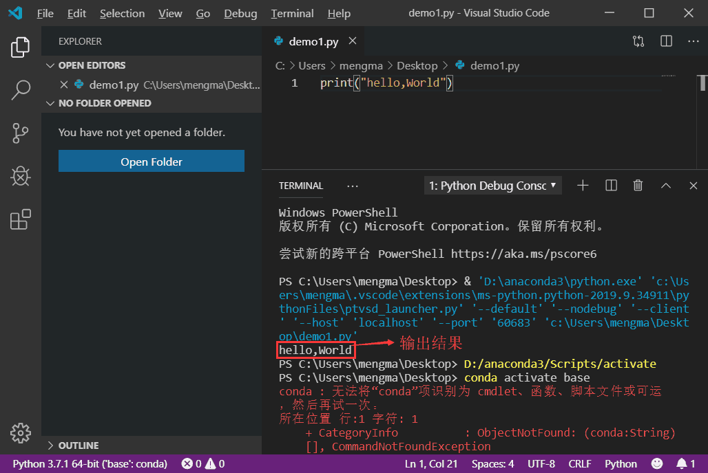
图 5 运行结果
图 5 显示的信息中，除了运行结果，还有代码执行过程中产生的信息。有读者可能会想，能否只显示运行结果呢？办法是有的，只需进行如下操作。
1) 手动将我们创建的 Python 文件放到一个文件夹中，然后将此文件夹引入到 VS Code。例如，这里将前面创建的 demo.py 文件放到了一个 Demo 文件夹（新建的），将此文件夹引入到 VS Code 的方法是，在菜单栏中依次选择“File -> Open Folder”（如图 6 所示），然后找到 Demo 文件夹，点击“选择文件夹”，就可以成功将指定文件夹引入到 VS Code 中。
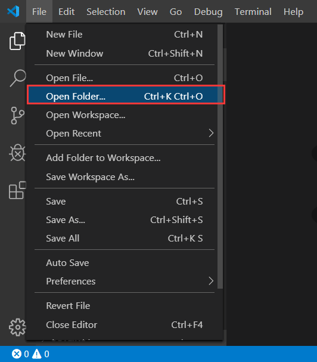
图 6 向 VS Code 引入文件夹
2) 引入成功，资源管理器（EXPLORER）中如图 7 所示。
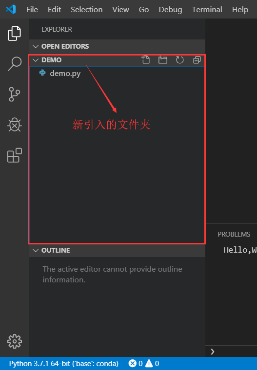
图 7 VS Code资源管理器
3) 在图 7 的基础上，先点击“demo.py”文件（这一步很重要），使 VS Code 右侧显示该文件，然后点击左侧的 Debug 按钮（小甲壳虫图标），再点击“设置”按钮，如图 8 所示。
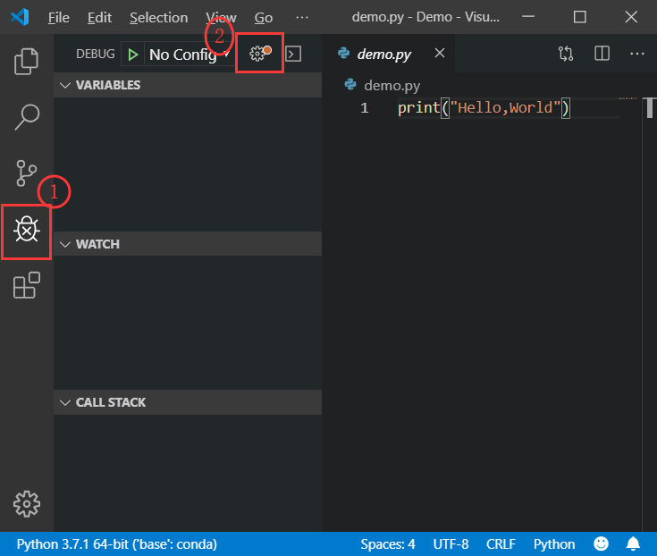
图 8 跳转到 Debug 界面
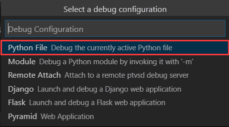
图 9 编译配置
5) 可以看到，显示出了一个名为“launch.json”的文件，我们需要做的就是将它所包含代码中的 "console":"integratedTerminal" 改为 "console": "none"，如图 10 所示。
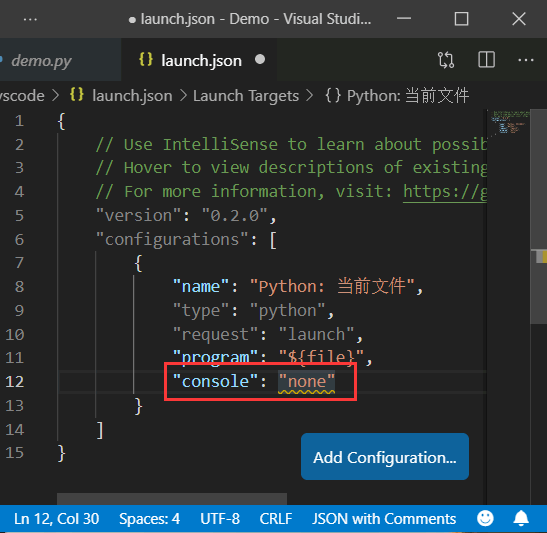
图 10 修改 launch.json 文件
6) 然后再次运行 demo.py，可以看出如图 11 所示的运行结果。

图 11 只显示程序运行结果
VS Code创建Python文件
首先，打开 VS Code，会看到如图 1 所示的欢迎界面。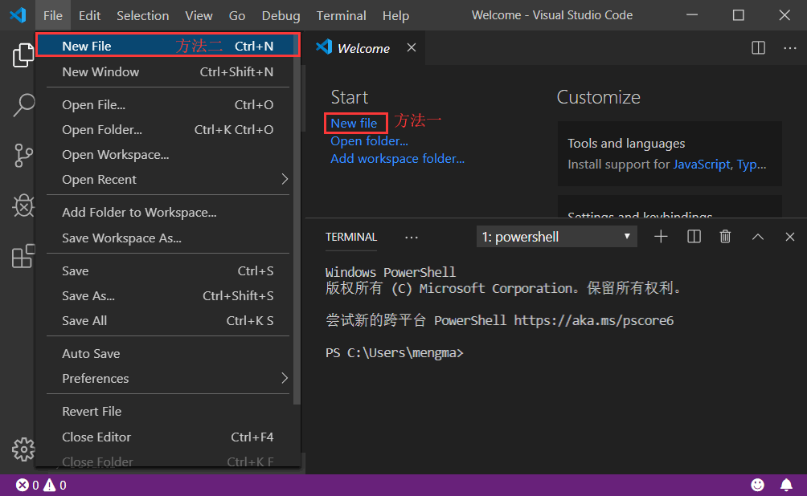
图 1 VS Code 欢迎界面
点击“New File”，或者在菜单栏中依次选择“File -> New File”，如图 2 所示。
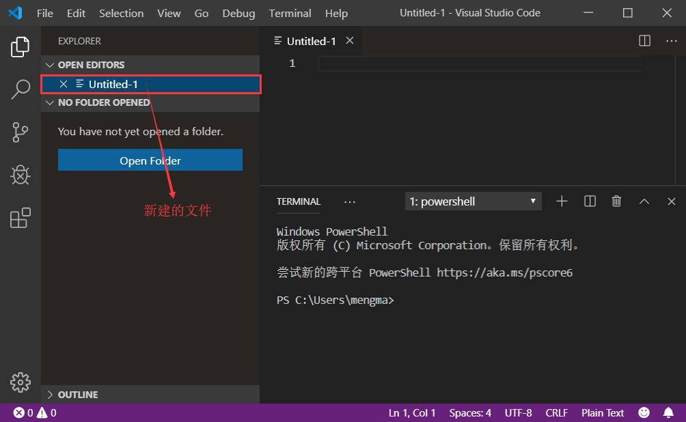
图 2 VS Code创建文件
此时可以看到，新建了一个名为“Untitled-1”的文件，此文件是 VS Code 默认创建的文件，没有文件类型，所以在编写 Python 代码前，需要手动将其另存为后缀名为 .py 的文件。
另存为的方式也很简单，使用快捷键“Ctrl+S”，或者在菜单栏中依次选择“File -> Save”，都会弹出如图 3 所示的窗口。
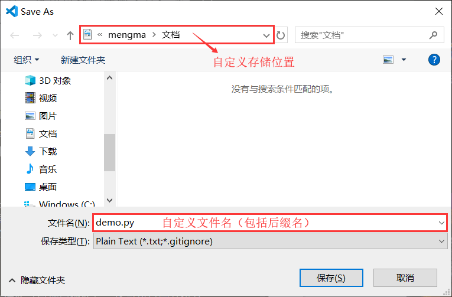
图 3 另存为 .py 文件
在此窗口中，我们可以设置该新建文件的文件名（包括后缀名），还可以自定义该文件的存储位置。
由此，我们就成功的创建了一个名为“demo.py”的 python 源文件，如图 4 所示。只有重新将新建文件保存为以 .py 为后缀名的文件，VS Code 才能够识别出来是 Python 文件，后期在此文件中编写 Python 代码时，才能高亮显示。
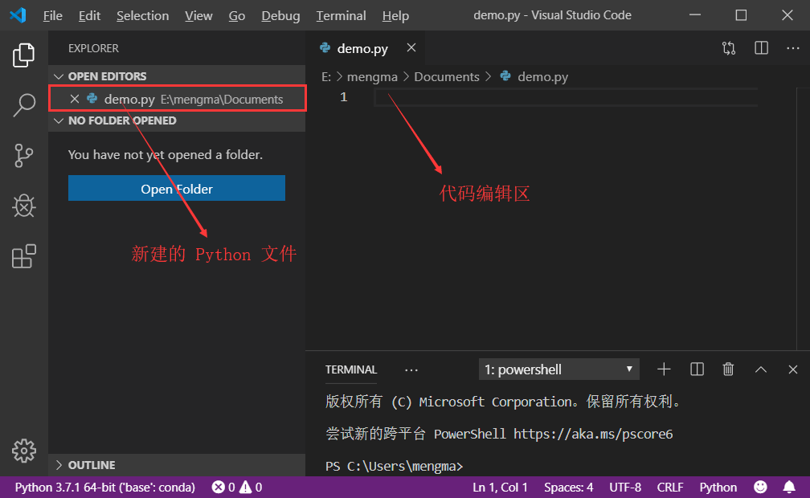
图 4 新建的 Python 文件
创建 Python 文件成功后，就可以在该文件中编写 Python 代码了，这里仍以第一个 Python 程序为例，即向“demo.py”文件中编写如下代码：
print("Hello,World")
代码编写完成后，就可以运行了，具体步骤是，使用组合键“Ctrl+F5”，或者在菜单栏中选择“Debug -> Start Without Debugging”，即可看到如图 5 所示的输出结果。
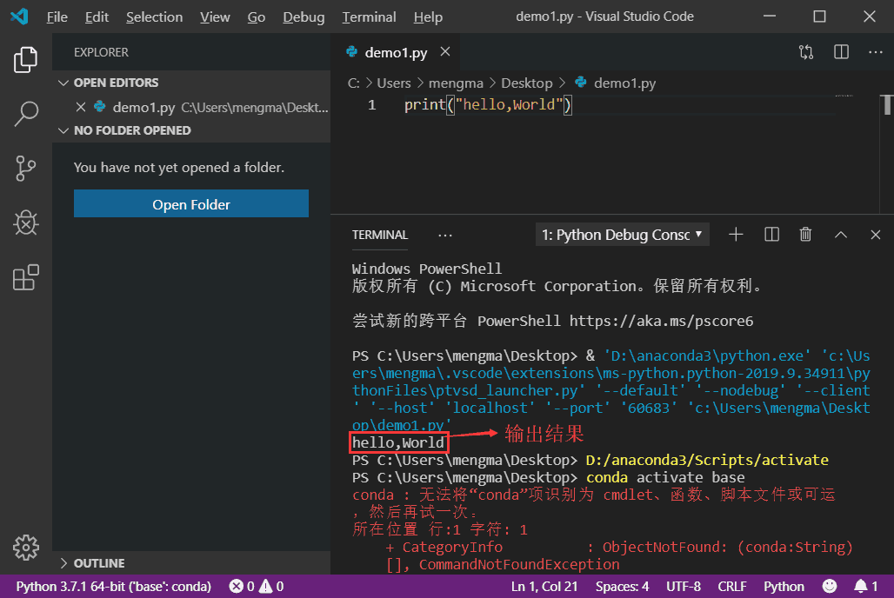
图 5 运行结果
图 5 显示的信息中，除了运行结果，还有代码执行过程中产生的信息。有读者可能会想，能否只显示运行结果呢？办法是有的，只需进行如下操作。
1) 手动将我们创建的 Python 文件放到一个文件夹中，然后将此文件夹引入到 VS Code。例如，这里将前面创建的 demo.py 文件放到了一个 Demo 文件夹（新建的），将此文件夹引入到 VS Code 的方法是，在菜单栏中依次选择“File -> Open Folder”（如图 6 所示），然后找到 Demo 文件夹，点击“选择文件夹”，就可以成功将指定文件夹引入到 VS Code 中。
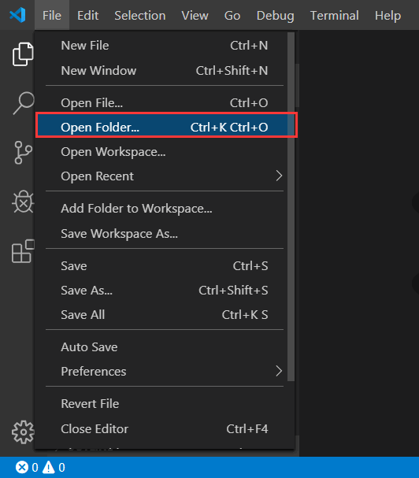
图 6 向 VS Code 引入文件夹
2) 引入成功，资源管理器（EXPLORER）中如图 7 所示。
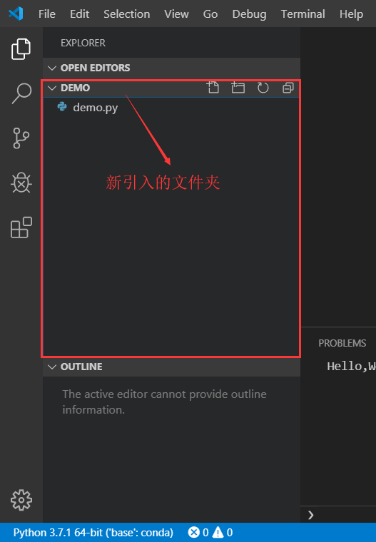
图 7 VS Code资源管理器
3) 在图 7 的基础上，先点击“demo.py”文件（这一步很重要），使 VS Code 右侧显示该文件，然后点击左侧的 Debug 按钮（小甲壳虫图标），再点击“设置”按钮，如图 8 所示。
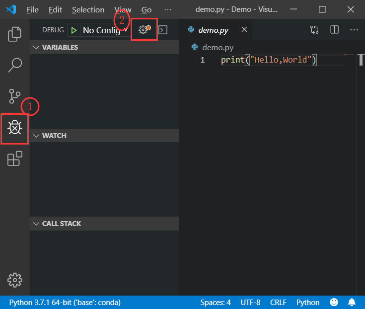
图 8 跳转到 Debug 界面
4) 此时会弹出一个对话框，选择“Python File”，如图 9 所示。注意，VS Code 的右侧一定要显示有建立的 Python 源文件，才能执行此步，否则会出错。
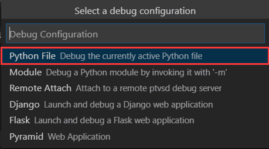
图 9 编译配置
5) 可以看到，显示出了一个名为“launch.json”的文件，我们需要做的就是将它所包含代码中的 "console":"integratedTerminal" 改为 "console": "none"，如图 10 所示。
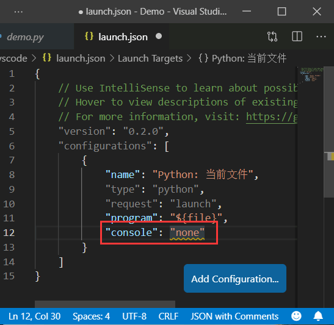
图 10 修改 launch.json 文件
6) 然后再次运行 demo.py，可以看出如图 11 所示的运行结果。
图 11 只显示程序运行结果
关注公众号「站长严长生」，在手机上阅读所有教程，随时随地都能学习。内含一款搜索神器，免费下载全网书籍和视频。

微信扫码关注公众号